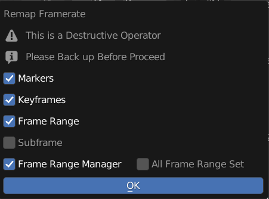
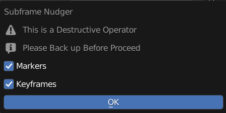
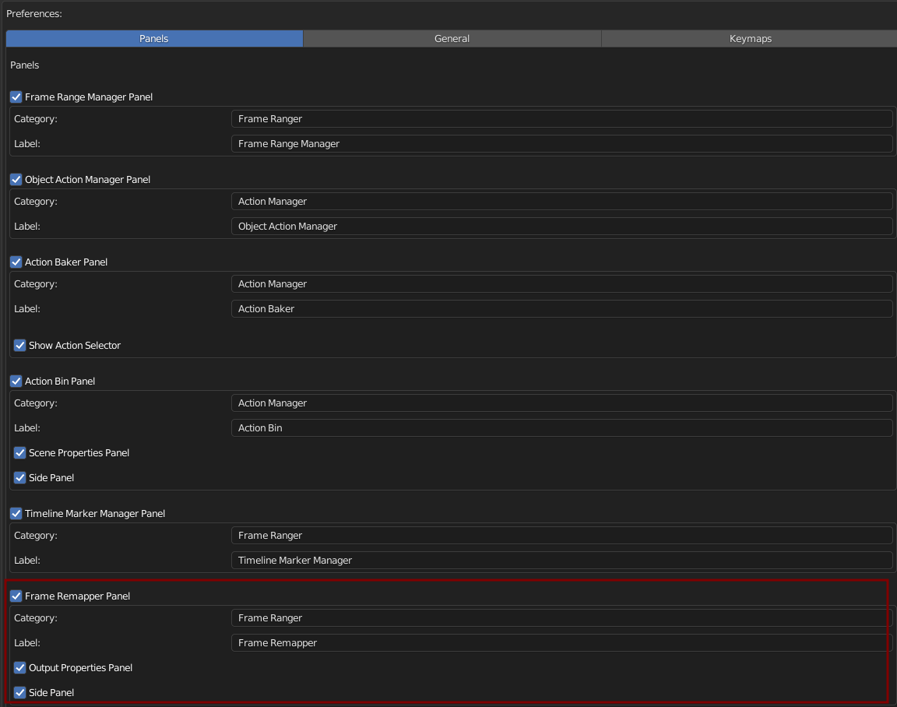

Framerate Remapper
A Destructive Tool that Remaps all the keyframes in this scene to different frame rate

FPS From
Current FPS, FPS remap From, this is View Only
FPS To
FPS to be Remap to
Remap Framerate
Remap Keyframes in this Blend File to the target framerate
Markers: Remap Markers
Keyframes: Remap Keyframes
Frame Range: Remap and Update Frame Range
Subframe: Use Subframe when available
Frame Range Manager: Remap Frame Ranges in Frame Range Manager
All Frame Range Set: Remap All Frame Range Set (Will Only Remap Current Frame Range Manager if Off)
Warning
This is a Destructive Operator
Please Backup Before Proceed
Nudge Subframe
Nudge Keyframes From Subframe to on Proper Frame
Markers: Nudge Markers
Keyframes: Nudge Keyframes
Warning
This is a Destructive Operator
Please Backup Before Proceed
Preferences
You Can Enable / Disable, Rename Category, and Rename Label in Preferences

Default Category: Frame Ranger
Default Label: Frame Remapper